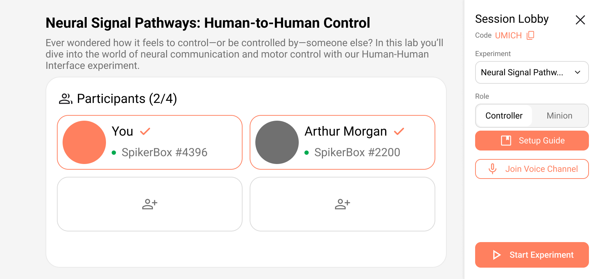
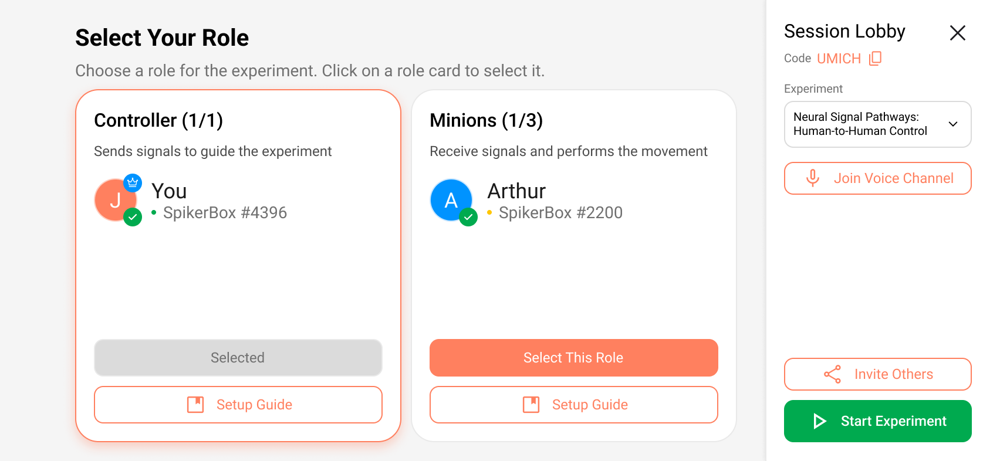

Backyard Brains
HHI Companion App
Designing a multi-user mobile experience that transforms a single-person neuroscience kit into a collaborative, remote learning platform — from a message to a sensation.
CLIENT
Backyard Brains
TIMELINE
Feb – Apr 2026
TEAM
Bruce L, Jeremy L, Sophia L, Daniel G, Lingfei Z
TOOLS
Figma, Wizard of Oz, Usability Testing
Priya, a college sophomore, opens the app for her first remote neuroscience experiment. She follows the setup instructions, attaches the electrodes to her arm, and waits to connect. The screen says "Waiting for connection." Two minutes pass. She isn't sure if she's connecting to a device or to another person — or whether that person can already see her data. There's no confirmation, no consent screen, no signal that anything is working. She quietly closes the app. The experiment never starts.
How might we enable students to collaboratively explore neuroscience tools remotely while ensuring safety and informed consent at every step?
What we delivered
Hi-fi prototype
Full remote HHI flow — consent, pairing, session, feedback — handed off to Backyard Brains as a complete design spec.
Consent-first model
Two-step opt-in before any signal is sent — cited by the client as one of the two highest-value contributions, alongside the visual onboarding diagram.
5 methods · 2 rounds of testing
Stakeholder interviews, competitive analysis, heuristic evaluation, and usability testing on the SpikerBox — then Wizard of Oz simulation and a second usability round (7 participants) on our prototype.
TL;DR — AT A GLANCE
Backyard Brains' HHI neuroscience kit only worked in-person — I led end-to-end UX research (heuristic evaluation, Wizard of Oz simulation, 2 rounds of usability testing) to bring it remote. The client cited our consent-first onboarding model as the highest-value contribution.
✦ SITUATION
From a message to a sensation — remotely
Backyard Brains' Human-Human Interface (HHI) lets User A flex a muscle, sending an electrical signal that triggers an involuntary movement in User B's arm. The problem: it only works with both people in the same room. Remote learners — Backyard Brains' primary audience — are completely locked out.
HMW
How might we enable students to collaboratively explore neuroscience tools in remote settings while ensuring safety and consent?
✦ PROCESS
Three phases, five methods
The first phase focused on the existing SpikerBox product — understanding what was broken before designing anything new. The second phase tested our own prototype using Wizard of Oz simulation. The third validated the hi-fi with a second usability round.
Feb — Understand
Stakeholder interviews, competitive analysis, heuristic evaluation, and usability testing Round 1 — all on the existing SpikerBox to understand what was broken before building anything new
Mar — Explore
Research synthesis, design requirements, Wizard of Oz simulation — testing remote pairing before any backend existed
Apr — Validate
Med-fi → hi-fi prototyping, usability testing Round 2 (7 participants) on the prototype + SpikerBox, client handoff
✦ KEY INSIGHTS
What all five methods agreed on
Safety & consent must come first
Activating a signal on someone else's body without visible consent feels wrong — even to the sender. Every stimulation must require explicit opt-in from the receiving user.
"Device vs. person" mental model is broken
Users couldn't tell if they were connecting to a device or a person. A visual onboarding diagram (SpikerBox → phone → internet → User B) resolved this immediately.
Feedback gaps cause retry loops
Without visible system state ("Is my partner connected? Did they feel it?"), users kept repeating actions. Status must be persistent and legible at all times.
Step-by-step beats dense instruction
Backyard Brains' audience skews neurodivergent. Breaking setup into single-action screens with clear completion indicators reduced drop-off significantly.
✦ DESIGN DECISIONS
Four decisions, each traced to research
Consent-first model
Two-step opt-in before any signal is sent. Always the most prominent action — never skippable.
Visual system diagram in onboarding
Animated flow showing SpikerBox → phone → internet → User B's body. Fixed the broken mental model in testing.
Persistent connection status bar
Partner state, signal strength, and last-sent confirmation always visible. Directly eliminated the retry loops from Round 1.
Single-action screens
No screen requires more than one decision. Each step has a visible completion state before advancing.
Before → After: Role selection screen


✦ OUTCOME
Delivered to Backyard Brains
The final hi-fi prototype and full research report were handed off as a complete design specification. The client cited the consent-first model and the visual onboarding diagram as the two highest-value contributions.
7
Participants in Round 2 usability testing
2
Wizard-of-Oz simulation trials
4
Design requirements shipped
5
Research methods across 3 months
✦ REFLECTION
What I learned
Safety is a UX problem
Trust doesn't emerge from a working product — it has to be designed. Consent flows and status feedback are load-bearing UX decisions with real safety implications.
Wizard of Oz testing is underrated
Simulating the experience before building the backend surfaced critical mental model issues when changes were still cheap.
Designing for neurodivergent users helps everyone
The step-by-step disclosure we added for ADHD-friendly design made the product clearer for all participant types.